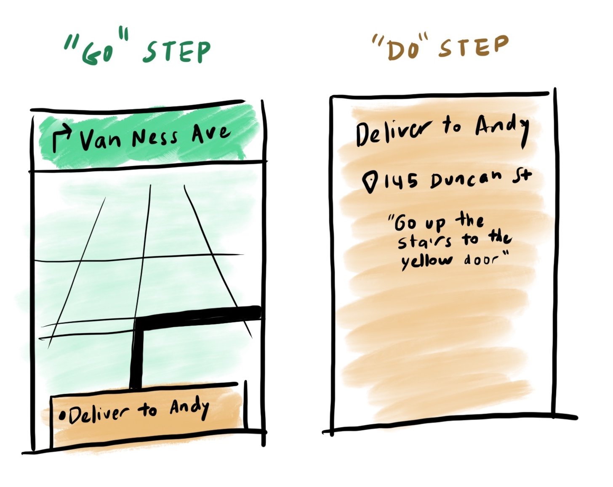

Uber Eats (2014–2020)
Laying the groundwork for Uber’s new businesses (2014)
I joined Uber as a founding member of the Uber Everything team, with the charter to start offering new services beyond rides and find Uber’s next billion-dollar business.
I quickly recognized it would be difficult to experiment within the paradigm of the Driver app at the time: it assumed all “jobs” were human riders, and only one job could be happening at a time (aside from some hacks to accommodate Uber Pool, which had just launched). To accelerate our progress, I took over management of Uber’s Driver Experience alongside my Uber Everything responsibilities, and rallied the team to transform the Driver app into a platform for multiple types of work—an app through which Uber could dispatch any series of “go here” and “do this” tasks. To this end, we introduced two new UX primitives, “go steps” and “do steps":
These simple primitives, along with the dispatch architecture to support it, proved very flexible. Asssmbling a team of 2–3 designers, I was able to designed MVP versions of both the consumer- and partner-facing products. and allowed us to launch Uber Fresh, Uber Rush, and Uber Corner Store within a few months, gathering signal on product market fit.
Based on our learnings, we focused our energies on a refinement of Uber Fresh that we called Uber Eats.
Designing a three-sided marketplace (2015–2020)
With Uber Eats, we weren’t just building a product, but a community of eaters, couriers, and restaurant employees (both kitchen staff and managers). To that end, our team needed to design distinct products for each of these audiences, as well as an array of internal tools for our city and country teams to manage network reliability and curate local content.
We couldn’t just design independently for each user type—also needed to consider the dispatch and ranking algorithms and incentives that governed the performance incentives and interactions between the three sides of our marketplace; for example:
- How might we reward the most-loved restaurants with more prominence in the Eater app, and coach lower-performing restaurants to improve? Should food ratings, speed, and defect rate be rolled into a single quality score, or do they need to be treated as distinct concepts?
- How might we encourage eaters to create orders that are more likely to be “batchable,” to reduce delivery cost? Can we pass along some of the cost savings to the eater?
- How can we get handoffs between restaurants and couriers to happen like clockwork, while minimizing the burden on restaurant staff to tell us exactly when each order is complete?
Although I was quite involved in many of the big UX challenges along the way, I was supported by many very capable ICs, so I’m not going to focus on individual UX challenges in this case study. However, the screenshots below should give you a sense of the breadth of our team’s work:

Building a thriving team (2014–2020)
As head of design for Eats, one of my primary “work products” was the team itself. The early Uber Eats design team that I personally assembled consisted of CS grads, art school graduates, former chefs, financial analysts, and ballet dancers; all of them were high-bit-rate thinkers and white-hot creative problem solvers. This core group was admired internally and externally for its talent and culture, and this powerful positive feedback loop helped me build the Uber Eats design team from zero to 60 people over the course of 5 years. My org was also the most gender-diverse design org at Uber: women comprised 54% of my org, including 7 out of 11 managers.
I’m also proud that I built a culture at Eats that embraced the scrappiness and speed of Uber but was also known as an inclusive, supportive place to collaborate and grow as a designer. I think shipping great work depends on hitting the sweet spot between autonomy and collaboration: where each designer is the “head of design” to their cross-functional counterparts, and yet also feels fully part of a design team with a lively crit culture and an approach to problem solving that is holistic rather than siloed.
In 2016, our Eats tech teams were completely US-based, yet we needed to design for Uber Eats users in an increasing number of markets beyond the US (eventually in 45 countries). To help us rise to the challenge, I introduced the Walkabout initiative as an ongoing part of our design team’s culture. Over the next four years, we’d send groups of 3–5 team members on dozens of trips to an international Eats markets. During these trips, which were distinct from our UX Research field studies, our designers would focus building relationships with our local teams and customers, understanding the cultural context and urban landscape, and assessing the quality of our baseline customer experience.
Sending every designer on an annual Walkabout helped our team, which was almost completely US-based, mitigate our natural biases. It was also a great team bonding experience and rite of passage for new team members, and an amazing perk for recruiting.